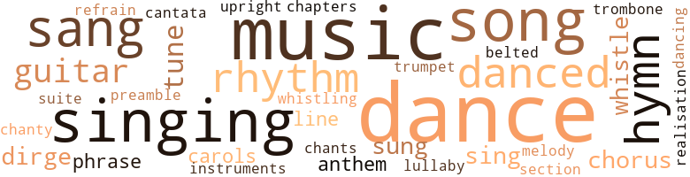
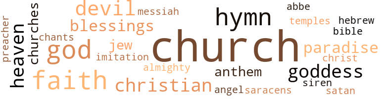

Last Cool Days, by Stewart, John (1996)
141 music-related terms matched in this text.
Most frequent terms in this topic: dance (22); music (17); singing (11); song (9); sang (8)
belt_out.v.01
Definition: sing loudly and forcefully
| word | sentence |
|---|---|
| belted | Stone , flashing gold from cheek to cheek , far from least among the dancers , had his immaculate flannel pants belted low and his silk shirt opened flowing down to the navel . |
cantata.n.01
Definition: a musical composition for voices and orchestra based on a religious text
| word | sentence |
|---|---|
| cantata | It was therefore very flattering to have him stroke my head after our harvest-time cantata and say , ' Would n't you be a prize in England ? ' |
carol.n.01
Definition: joyful religious song celebrating the birth of Christ
| word | sentence |
|---|---|
| carols | He was in the village only a few months when he had us - the acolytes and members of his choir - admitted to the Overseer 's house on the third night before Xmas to offer up carols . |
| carols | I sang carols in Anthony 's house on the third night before Xmas that year , and no one would have guessed that he and his younger brother were the same two who had tripped me up one day the year before in the fields and stolen my shirt to make tail for their kite . |
chant.n.01
Definition: a repetitive song in which as many syllables as necessary are assigned to a single tone
| word | sentence |
|---|---|
| chants | And after the Chinese shopkeepers had won their high prices , and at eight o'clock all the drunk and dying were kicked out , the shop turned dark , our goatskin drums commenced their rattlings in every quarter , dry voices went up singing calypsos or Hindu chants . |
chantey.n.01
Definition: a rhythmical work song originally sung by sailors
| word | sentence |
|---|---|
| chanty | It is only lately I have come to understand that he must have been sharply aware of his short-lived madness , for I have been hearing again the songs he sang and played on his guitar to close out those Saturday nights , and each chanty - I hear them now - laments the passing of his foreshortened fire . |
chapter.n.01
Definition: a subdivision of a written work; usually numbered and titled
| word | sentence |
|---|---|
| chapters | Without any guidance , why read past those chapters that bubbled blood ? |
chorus.n.01
Definition: any utterance produced simultaneously by a group
| word | sentence |
|---|---|
| chorus | I should have been pleased and happy , I suppose , as along with the other ' kings ' and chorus I was entreated to sit in the soft leather chairs and eat the Overseer 's imported fruit . |
| chorus | ' Go to hell Ragoo , ' and she was part of a big chorus which included Stone and Betty her sister ' too ; Mr Stone who now had his own billiard parlour and cafe , or who , it was said , ran Betty 's billiard parlour and cafe , the same everyone knew belonged to Anthony really but never spoke that out except in whispers . |
| chorus | The wind howled and shrieked like a chorus of wild birds , the waves cracked their wicked backs high above the prisoners ' heads , but the captain pushed on . |
cornet.n.01
Definition: a brass musical instrument with a brilliant tone; has a narrow tube and a flared bell and is played by means of valves
| word | sentence |
|---|---|
| trumpet | The boom drum vibrating in my stomach , the trumpet screaming and trombone calling ' blood ' , called out ' blood ' , demanded some declaration , some commitment - the motive power of blood . |
dance.n.01
Definition: an artistic form of nonverbal communication
| word | sentence |
|---|---|
| dances | Turning up at village dances . |
| dance | There was a dance in the village that night , an after-game dance . |
| dance | There was a dance in the village that night , an after-game dance . |
| dance | I was afraid , but the dance called , and leaving my bundle of clothes beneath the window I strutted over to the jitney and jumped on his hood . |
| dance | The dance called . ' |
| dance | The dance is n't over yet . ' |
| dance | Of course the dance was not over , and we were going nowhere . |
| dance | Betty was sweaty and hot , and so was I , and the dance between us was far from finished . |
| dance | We were going nowhere but to a quiet place , a secluded place where we could continue the dance between us without the intrusion of clapping grandfathers and brass music . |
| dance | The dance is n't over yet . |
| dance | There was warning in her voice , but the dance called . |
| dance | Going to be finished feeling far , far unfinished ) But one does not refuse the dance , one goes in debt instead . |
| dance | She squeezed my hand hard , but the dance had already begun to slow down within me , and for the first time I could feel the coolness of the night breeze coming in through my damp clothes . |
dance.n.02
Definition: a party of people assembled for dancing
| word | sentence |
|---|---|
| dance | The honky sound of the dance band came softly down from the school - house , and by then I had sat long enough on Stone 's step to be ready for what escape could be found in the village . |
| dance | The honky dance band ; but before that , distant voices harmonized in sweet lament from the church . |
| dance | And even after church was over , and the grandmothers in their shawls had gone by , pocking home in their square-heeled shoes , the music they had helped make at the church still hovered in the air , coming back again behind Anthony 's mechanical rumble , coming back , linger - ing like a melodic echo about the village even after the dance band struck up , lifting a melancholy echo behind the bright brass . |
| dance | Perhaps if this had not come too late , and if the sounds of the dance band was not half lost on the breeze , Betty might have earned her new red dress , and I a restful night beside her . |
dance.v.02
Definition: move in a pattern; usually to musical accompaniment; do or perform a dance
| word | sentence |
|---|---|
| dance | A caress on the shoulders , a pat on the ass , and in their eyes dreams of the days when they used to dance all night and still race the sun to the fields come morning . |
dance.v.03
Definition: skip, leap, or move up and down or sideways
| word | sentence |
|---|---|
| danced | From Merlin the magician to Cecil Rhodes the wizard , to the paralysed Hamlet , the confused Othello ; Saracens and Richard Coeur de Lion ; also Achilles , Hector , and Odysseus ; Cleopatra ; Genghis Kahn , Alexander ; the Arabian genies ; Erikson and Byrd ; adventure piled on adventure , and every weekday between four and the Angelus my pulse danced and lunged with the conquest of these heroes or their valiant dying . |
| danced | Blue waves danced foam flecked across the Gulf , and bone-white gulls floated lazily above the fishing boats that were coming in with the late catch . |
| dance | ' Did you dance and play all the time the way they do ? |
| danced | Even Grandfather came out and danced down the road , although he had to keep saying , ' If it were n't for them Yanks , we 'd be celebrating the Germans right now . ' |
| danced | And long after darkness that day , the Chinese rumshop was still open , the police station closed , while the jangling band danced from one end of the village to the other . |
| dancing | He watched the fishing lanterns dancing like fireflies in the night , and the revolving lamp at the lighthouse flashing yellow-red , round and round . |
| dance | I could hear him coming from afar , for there was no other jitney like his in all the village , and neither time did I fulfil the wish to leap out into his bright lights , dance him off the road . |
| dance | You went to war and you can fight - you know anything about how to dance ? ' |
| dance | I paid my two shillings and I intend to dance till morning . ' |
| danced | They danced . |
| danced | He kept his black hawk 's eye steadfastly averted from where the white girl danced , kept them averted and to himself , except to look staggering Samuel up and down once with a vituperous ' Scum ! |
| dance | Boy you ought to bring her roses and teach her how to dance . |
dirge.n.01
Definition: a song or hymn of mourning composed or performed as a memorial to a dead person
| word | sentence |
|---|---|
| dirge | As they rocked about in the tossing launch waiting to cast off , the old Indian who had sung the dirge threw aside his oilskin , and stood bare - headed under the pelting rain . |
| dirge | The melody was dry as the windswept Punjab plains upon which it was first sung - a dirge . |
| dirge | The old man paid no attention , and the dirge went on , without words finally , a steady moaning in his high cracked voice . |
guitar.n.01
Definition: a stringed instrument usually having six strings; played by strumming or plucking
| word | sentence |
|---|---|
| guitar | Telephone wires strung slackly like strings on a tired guitar , sagging fret to fret across a box still dazzling white . |
| guitar | It is only lately I have come to understand that he must have been sharply aware of his short-lived madness , for I have been hearing again the songs he sang and played on his guitar to close out those Saturday nights , and each chanty - I hear them now - laments the passing of his foreshortened fire . |
| guitar | Saturday nights , after he was through with his fondling , his promises , and had retreated to his guitar , she swept the floor or smoked on the front steps if there were no rain ; or if it were raining she emptied the pans which caught water from the leaks through our rotten galvanized roof , and washed herself in the corner before going to bed . |
| guitar | We never had much , and it did n't take us long to find out that he had taken nothing but his guitar , the khaki suit he must have been wearing , and his only pair of shoes . |
| guitar | So he walked away from the Overseer , the hot fields , the village , taking nothing with him but his guitar . |
| guitar | We heard about him - stories of a drunken , filthy man who hoboed from village to village , an unkempt skeleton of a man whose only grace lay in the music he made with his guitar and his singing voice . |
hymn.n.01
Definition: a song of praise (to God or to a saint or to a nation)
| word | sentence |
|---|---|
| anthem | All of Africa rising up , and here , and in North America , Brazil , everywhere , black men rising up behind one national anthem . |
| hymn | And into the night we sortied , past the church , set back between its tall palms almost into the edge of the canefield that was newly cut , where the congregation was singing the second hymn . |
| anthem | ' What was the Belgian national anthem in the First World War ? |
| hymn | Once in the past , on Sunday night after the game , I would at this time be getting ready for evening service - shined shoes , hymn book , collection money , and in my heart a suppressed fluttering for Cleo who would be waiting on her bed beneath the hanging bulb . |
| hymn | And at times I sang a phrase or two with them because I knew the airs and words to every hymn they raised . |
| hymns | I remember her voice - singing bits of hymns and the latest calypsos indis - criminately . |
| hymn | A man for whom the front pews in church were always left vacant whether he attended or not ; who after the last hymn was sung led his wife and sons from the church ahead of everyone else . |
| hymn | It was a hymn against despair that created a greater despair within all those who heard it , and after a while a guard lazily called to the Indian to shut up . |
| hymns | The church itself sat right on the edge of the canefields and as the choir raised its passionate hymns to a long lost saviour , the dry cane stalks rustled in accompaniment , rustled their own suffering unto death with a more sustained voice than the congregation . |
lullaby.n.01
Definition: a quiet song intended to lull a child to sleep
| word | sentence |
|---|---|
| lullaby | The dry leaves crackled , cocoa blossoms perfumed the moonlight peeping down through the trees , the river played its little lullaby upon the rocks , and Hille performed in absentia . |
music.n.01
Definition: an artistic form of auditory communication incorporating instrumental or vocal tones in a structured and continuous manner
| word | sentence |
|---|---|
| music | Although Anthony was the same age as I , and his brother Richard just two years younger , they sat like redfaced cherubims in white linen shirts and school ties , deep in the enfolding softness of their leather couch between the Overseer and his wife , accepting benignly the music and little drama we made . |
| music | And for that I had no answer , having long dreamed of seeing the mainland , seeing it come close , close enough to lose me in its jungles , feather me into cities where Latin music seeped from every crevice , where the sun climbed and fell each day to an erotic throb , but never having thought of going down to the boat office and buying a ticket just like that . |
| music | I listened to the music instead . |
| music | The same music as we would have had for a Society marching . |
| music | " Onward Christian soldiers " , the same music . |
| music | And only after I heard the first music I realized how long I had been sitting . |
| music | And even after church was over , and the grandmothers in their shawls had gone by , pocking home in their square-heeled shoes , the music they had helped make at the church still hovered in the air , coming back again behind Anthony 's mechanical rumble , coming back , linger - ing like a melodic echo about the village even after the dance band struck up , lifting a melancholy echo behind the bright brass . |
| music | Dresses and shirts and heaving bodies sending a hot smell through the windows , master-minded by the little band that raised enough music to intoxicate the whole village , And in the dark , drawn up against the school building was Anthony 's jitney , with the hunched driver smoking over the wheel . |
| music | The grandfathers along the wall clapped and en - couraged Betty and Stone lower deeper faster , from one end of the room to the other , recklessly between the other dancers , as though the music was playing only for them . |
| music | But tonight Anthony and his sorrows belonged not here beside the schoolroom where the music was elemental and created for black faces . |
| music | Hear the music . |
| music | We owned the music , the smell of rum and ice cream , and sweat . |
| music | The music there would be all my own , and any that she herself could make . |
| music | And countless days with not much else to do but see the world grow smaller , feel my heart grow bigger , bold , daring enough to beat boldly in Betty 's bed , and to its own music . |
| music | I could hear the music coming again from the schoolhouse . |
| music | The music they usually make with voices and feet was lost in the rain , but none of them seemed discontented . |
| Music | Music did come from downstairs at The Undertaker 's . |
| music | We heard about him - stories of a drunken , filthy man who hoboed from village to village , an unkempt skeleton of a man whose only grace lay in the music he made with his guitar and his singing voice . |
musical_instrument.n.01
Definition: any of various devices or contrivances that can be used to produce musical tones or sounds
| word | sentence |
|---|---|
| instruments | On an afternoon in 1945 we had a band half the village long raising such a racket with its makeshift instruments that if the Germans had not already surrendered , the celebration we raised might have brought a bomb faster than all the lamps we had not lit over the past four years . |
phrase.n.02
Definition: a short musical passage
| word | sentence |
|---|---|
| phrase | And at times I sang a phrase or two with them because I knew the airs and words to every hymn they raised . |
| phrases | I came close to loving her too when she said , ' No need to talk , baby ' because then she cracked me so I could spill words , phrases , intentions , dreams until I felt purged . |
preamble.n.01
Definition: a preliminary introduction to a statute or constitution (usually explaining its purpose)
| word | sentence |
|---|---|
| preamble | Nor did he look upwards to the judge who had begun his preamble . |
realization.n.03
Definition: a musical composition that has been completed or enriched by someone other than the composer
| word | sentence |
|---|---|
| realisation | Many years went by before I awoke to the realisation that Grandfather was unique , I was unique , and whatever re - semblance we bore to each other physically was no proof that we had been cast in the same mould through and through . |
refrain.n.01
Definition: the part of a song where a soloist is joined by a group of singers
| word | sentence |
|---|---|
| refrain | So why this refrain ? |
rhythm.n.04
Definition: the arrangement of spoken words alternating stressed and unstressed elements
| word | sentence |
|---|---|
| rhythm | And as if that were not enough , the ricochet and rhythm , sending delayed rivulets down my neck , my spine , raising more hell down that path than Hille has ever been able to , try her hardest . |
| rhythm | And in touching , our pulses joined their own rhythm which set up barriers against the noises of the City . |
| rhythm | Sometimes hiding her altogether with quick thrusting slants of their bodies , waving and weaving like sensuous cobras , then the step away , fluid as light with no break in the rhythm of slurring bellies . |
| rhythm | He was a challenge , and Hille , passed from hand to hand , tried her best too to make that successive offering of ass and belly in rhythm , but not quite getting it because the separation of back and behind did not work too well for her . |
| rhythm | She looked to me , for me , but when our eyes met I smiled and clapped the rhythm . |
| rhythm | Her rhythm drove his blood so fast , it took away his choices and forced him to debase himself . |
section.n.01
Definition: a self-contained part of a larger composition (written or musical)
| word | sentence |
|---|---|
| section | It was a relief to be once again in the roomy , better lighted section of the prison , but after having seen the lower depths , Marcus would not let his hopes rise too high . |
sing.v.02
Definition: produce tones with the voice
| word | sentence |
|---|---|
| sang | I had read passages from the bible and sang - Be not afraid , ye beasts of the field Be not afraid , ye beasts of the field - For the pastures of the wilderness do spring ... and later he had come into the vestry where we choir boys were taking off our cassocks and surplices . |
| sang | I sang carols in Anthony 's house on the third night before Xmas that year , and no one would have guessed that he and his younger brother were the same two who had tripped me up one day the year before in the fields and stolen my shirt to make tail for their kite . |
| sang | My father sang each Saturday night . |
| sang | Mother rarely sang , and , always , when she thought she was not being over - heard . |
| singing | And I did n't dare correct father either , who mispronounced the lyrics sometimes , flatted or sharped in the wrong places some - times , because there was no fury like that with which he could say , ' I been singing that song long before any half dumb fool put words to it . |
| sang | For when in school we sang ' Britons never never shall be slaves ' I was a Briton , and it never occurred to me that Britain had yet to acknowledge the existence of black Britons . |
| singing | And into the night we sortied , past the church , set back between its tall palms almost into the edge of the canefield that was newly cut , where the congregation was singing the second hymn . |
| sing | Outside the school the children lined up to sing ' Rule Britannia ' and ' Siegfried Line ' and ' You 're a Sap Mr Jap ' , before scampering into the road with their bottle and spoons to join the dancing . |
| sing | And when time came for everybody to stand and sing ' God save the king ' they did , but it was a half-hearted effort . |
| sang | And at times I sang a phrase or two with them because I knew the airs and words to every hymn they raised . |
| sung | As they rocked about in the tossing launch waiting to cast off , the old Indian who had sung the dirge threw aside his oilskin , and stood bare - headed under the pelting rain . |
| sung | A man for whom the front pews in church were always left vacant whether he attended or not ; who after the last hymn was sung led his wife and sons from the church ahead of everyone else . |
| sang | It is only lately I have come to understand that he must have been sharply aware of his short-lived madness , for I have been hearing again the songs he sang and played on his guitar to close out those Saturday nights , and each chanty - I hear them now - laments the passing of his foreshortened fire . |
| sang | Sometimes she sang alone , but never did she sing with Father . |
| sing | Sometimes she sang alone , but never did she sing with Father . |
| sung | The melody was dry as the windswept Punjab plains upon which it was first sung - a dirge . |
singing.n.01
Definition: the act of singing vocal music
| word | sentence |
|---|---|
| singing | And after the Chinese shopkeepers had won their high prices , and at eight o'clock all the drunk and dying were kicked out , the shop turned dark , our goatskin drums commenced their rattlings in every quarter , dry voices went up singing calypsos or Hindu chants . |
| singing | ' Very well , ' the Reverend said , as the choir semi-circled around the room , and after each part had sounded its note the singing began . |
| singing | Once the singing was over we had nothing to offer the Overseer , and from the beginning he had nothing to say to us . |
| singing | Betty was by then rattling supper things in the kitchen , and singing too - a vulgar song . |
| singing | That was their army - ' Onward Christian soldiers , marching as to war ... ' - the women singing louder than the men . |
| singing | And so it must have been for many others like me dancing and singing in the band - this discovery that the stepping-off point to a full self was not so distant after all . |
| singing | All the crying , and singing . |
| singing | I remember her voice - singing bits of hymns and the latest calypsos indis - criminately . |
| singing | Coming back , it was a day for singing alone across the fields , and sighing too , in sympathy with the lonely palm trees of the next village ; such tall scrawny leaning silhouettes in the bright sun . |
song.n.01
Definition: a short musical composition with words
| word | sentence |
|---|---|
| songs | The squabbling , the ragged songs , the wailing ; the smell of sweat and rotting pickle ; how lovely the light-headed men weaving their way through the dark high on a rum vapour , and the women who either rendered body and soul or got their faces bloodied . |
| song | Betty was by then rattling supper things in the kitchen , and singing too - a vulgar song . |
| song | I doubt she ever learned a single song completely , tune or lyrics . |
| song | And I did n't dare correct father either , who mispronounced the lyrics sometimes , flatted or sharped in the wrong places some - times , because there was no fury like that with which he could say , ' I been singing that song long before any half dumb fool put words to it . |
| song | In my ear the echo of those voices - ' Onward Christian soldiers , ' and the slap of weary feet down the dusty road , punctuating a song that had lost its power ; the echo of a drunken mysticism that could not be let down for a single moment if Sunday would be any different from Monday in the fields , if Sunday were to be any respite of unthinking about the fields . |
| song | The hard old Indian held his head down in the rain and started up his song . |
| song | His victrola was whining that old war song again ... ' Rose Ann of Charing Cross ... I 'll keep your memory ever bright ... Rose Ann of Charing Cross ... Dressed in a uniform of white ... ' I too might have been seduced by that song if my legs , like his , had been shot off in somebody 's war . |
| song | His victrola was whining that old war song again ... ' Rose Ann of Charing Cross ... I 'll keep your memory ever bright ... Rose Ann of Charing Cross ... Dressed in a uniform of white ... ' I too might have been seduced by that song if my legs , like his , had been shot off in somebody 's war . |
| song | I AM NO WHITE MAN . . . That is a better song . |
| songs | It is only lately I have come to understand that he must have been sharply aware of his short-lived madness , for I have been hearing again the songs he sang and played on his guitar to close out those Saturday nights , and each chanty - I hear them now - laments the passing of his foreshortened fire . |
| song | His cuff-mate , also Indian , but older , with a bald head and face wrinkled from many years under the sun , started a comforting song . |
suite.n.01
Definition: a musical composition of several movements only loosely connected
| word | sentence |
|---|---|
| suite | Seeing too , although she was n't there , could n't tell , the slower operation on him dead on arrival , slow and solemn , a removal to his father 's private suite , bathing and bandaging , and making ready for his last appearance . |
trombone.n.01
Definition: a brass instrument consisting of a long tube whose length can be varied by a U-shaped slide
| word | sentence |
|---|---|
| trombone | The boom drum vibrating in my stomach , the trumpet screaming and trombone calling ' blood ' , called out ' blood ' , demanded some declaration , some commitment - the motive power of blood . |
tune.n.01
Definition: a succession of notes forming a distinctive sequence
| word | sentence |
|---|---|
| tunes | What tunes who played ? |
| tune | I doubt she ever learned a single song completely , tune or lyrics . |
| tune | Dum di di dee da dum in an off-key voice was usually how she said it to herself , and I did n't dare help or correct her , lyrics or tune , because then she would shut up completely . |
| line | Her lips made a line that said they were pleased , satisfied . |
| tune | Onward Christian soldiers through the two o'clock village heat , sweating under the satin banners , the rosettes and regalias , marching behind a band out of tune from lodge to church , later staggering from rumshop to home , sans even a council of war . |
| line | Overlord and slave concurrent to his black patrons , he popped the bottles for those drinking stout , drew glasses of puncheon for the others , with never a smile cracking his face , wiping his fingers on the smudged apron cloth around his lard middle , Amerigo 's line is no longer trim . |
| melody | The melody was dry as the windswept Punjab plains upon which it was first sung - a dirge . |
upright.n.02
Definition: a piano with a vertical sounding board
| word | sentence |
|---|---|
| upright | Men walk upright , lesser animals slouch or go horizontally . |
whistle.v.01
Definition: make whistling sounds
| word | sentence |
|---|---|
| whistling | Instead , I flicked on the electric light and stayed long after the early bats ceased whistling by outside the window . |
| whistle | What I mean is , remember how you used to run like hell to catch that seven o'clock whistle every morning ? ' |
| whistle | But is n't there something wrong with a man tucking his tail in and behaving like he 's going get a whipping because he 's just a minute behind the whistle ? ' |
| whistle | No more days promenad - ing Frederick Street , no more days along the wharves sniffing at boats : from Grenada spices and goats , from Tobago mangoes and plums , from Canada saltfish , potatoes , and onions , from Argentina ... from Brazil ... Sniffing at boats and gazing at the ocean liners ; gazing enviously at the departing voyagers high on the white painted decks , waiting for the steam whistle signal which set sooty tugs steering the great liners out to sea . |
183 violence-related terms matched in this text.
Most frequent terms in this topic: fighting (16); fight (16); kill (15); kicked (8); killed (8)
aggravation.n.02
Definition: unfriendly behavior that causes anger or resentment
| word | sentence |
|---|---|
| provocation | The court recognizes that you offered no testimony on behalf of your innocence ; but in the light of the facts of the case this could only be interpreted as another aspect of that nature which wilfully caused another man 's death without the least provocation . |
anger.n.01
Definition: a strong emotion; a feeling that is oriented toward some real or supposed grievance
| word | sentence |
|---|---|
| anger | I recognized that when the crowd 's roar changed to a howl of anger , and I felt the press of hands and bodies against my back propelling me down towards the field . |
assegai.n.01
Definition: the slender spear of the Bantu-speaking people of Africa
| word | sentence |
|---|---|
| assegai | The jungle and the Guinea Coast , bush huts , fires , and bloody compounds ; the veldt between Bloemfontein and Pretoria where part of me once was a naked Kaffir fearless and deadly with my charmed assegai ; the Middle Passage where chained on my back in the dark stink hold I was number one hundred and thirty-three , therefore number one to be saved from being dropped in the weed when brave Captain Colinwood sought to protect his owners against dead liabilities ; Amsterdam , Cadiz , Liverpool , Marseilles , in each place my sweat and blood had been left behind in barracoons and monuments and private fortunes . |
| assegais | So , set my eyes into The City of Gold for the time being , among Kaffirs , Boers , civilized guns and savage assegais ; bodies and a lot of blood between Pretoria and Bloemfontein . |
bayonet.n.01
Definition: a knife that can be fixed to the end of a rifle and used as a weapon
| word | sentence |
|---|---|
| bayonets | It would be grand to be in battle against them , or any other enemy , especially in a crisp uniform , giving orders , leading my men in charge after charge against their guns and bayonets ; perhaps , certainly , winning the DSM . |
| bayonets | He would have known that though I had not gone away to the war , though I had not walked through fields of dying men , and seen women with bayonets stuck deep into their breasts , I too had grown . |
bleeding.n.01
Definition: the flow of blood from a ruptured blood vessel
| word | sentence |
|---|---|
| bleedings | Yet I was a triumph laying my gift at the feet of the once and ever king - Myrrh is mine , its hitter perfume Breathes a life of gathering gloomy Sorrowing , sighing , bleedings dying , Sealed in the stone cold tomb ... The Reverend applauded , the Overseer and his wife applauded , and so did young Richard . |
| bleeding | Turned around , facing the pavilion where I sat two minutes ago , I found myself standing over the bleeding Ragoo . |
| haemorrhage | ' I had a haemorrhage . ' |
| haemorrhage | So what made her haemorrhage ? |
| haemorrhage | ' The sight of blood made you haemorrhage ? ' |
| haemorrhage | They took me to the hospital right away and the doctor said I had a haemorrhage . ' |
| haemorrhage | A silence then , while I pondered that - fainting and haemorrhage and fainting - but could n't make sense out of the combination . |
brutality.n.02
Definition: a brutal barbarous savage act
| word | sentence |
|---|---|
| barbarisms | To his boy , a further privilege - that of protecting the tradition of his ancestors , of offering his most personal and unique possession , life , to protect those traditions from all barbarisms now and in the future . |
bump.n.01
Definition: a lump on the body caused by a blow
| word | sentence |
|---|---|
| bump | I used to wear a thin dress so that wherever they landed on me I could feel the soft bump of their edges . |
butcher.v.01
Definition: kill (animals) usually for food consumption
| word | sentence |
|---|---|
| slaughtered | So they gave him Cleo , the way a wild boar is fed a sow or two to tame him , and after a while the other redfaces did n't have to keep such a sharp eye on Eccles any more , nor the men who worked under him either , and no one disbelieved Cleo when at those extraordinary times when a pig or goat was slaughtered and everyone clamoured around for a piece of meat she shouted , ' No bones , no fat ! |
contemn.v.01
Definition: look down on with disdain
| word | sentence |
|---|---|
| despised | On about staff housing at the orphanage , with which , even though I despised the director who in our eyes was responsible for it , I had never before been dissatisfied . |
| despise | How to do anything but despise the old men for their narrow minds , their fear , and rum - soaked pugnacity ? |
covetousness.n.01
Definition: an envious eagerness to possess something
| word | sentence |
|---|---|
| covetousness | It was all defiance and covetousness , particularly when she yearned louder than he to climb the tall gangplank and sail off to any port on the globe at the cost of nothing more than a request to him . |
craze.n.02
Definition: state of violent mental agitation
| word | sentence |
|---|---|
| frenzy | A plunging frenzy brave Christian ; twisted , remote from every paradise , yet not so twisting nor remote as the demon voice standing on its last note through the dusk . |
| frenzy | I must admit that the warmth of her breasts burned me , her little flat belly too , so even though I had already done with her I did not resist being ushered to bed , where she undressed and undressed me and did all the work without frenzy or sweetness , with just a great cavernous suck as though the Haemorrhage had left her very empty indeed . |
cutlas.n.01
Definition: a short heavy curved sword with one edge; formerly used by sailors
| word | sentence |
|---|---|
| cutlass | But suddenly I heard a voice I half knew , ' Cut him up , cut him up , ' and when I looked around this Indian from our village - who always called himself Son of the Prince of Punjab - was waving a cutlass overhead . |
| cutlass | I stopped once for a coconut , and the Indian , blacker than Mahatma Gandhi , took four nonchalant strokes with his cutlass - three for the heavy damp fibre around the nut , one cracking the nut itself , skimming , but not breaking the jelly - then screwed out the jelly and handed me the drink . |
| cutlass | ' This big one here 's the same price - twelve cents , ' he said , spearing one on the tip of his cutlass . |
dagger.n.01
Definition: a short knife with a pointed blade used for piercing or stabbing
| word | sentence |
|---|---|
| dagger | Never , ' Stone saying , and random voices pick it up , ' Me neither a gun , or a dagger , or throw myself in the pond . |
decapitate.v.01
Definition: cut the head of
| word | sentence |
|---|---|
| behead | The sun did not reach to land , and the wind coming down sharply through the Bocas not only threatened to behead the waving palms on shore , but had the small fishing craft anchored in the bay bobbing furiously in the choppy water . |
defy.v.01
Definition: resist or confront with resistance
| word | sentence |
|---|---|
| withstood | Which she withstood without comment , with only the pulling down of her dress and sitting up with her head tossed back as if waiting for an apology . |
desecrate.v.01
Definition: violate the sacred character of a place or language
| word | sentence |
|---|---|
| profaned | And losing in the privacy of my room , where the sperm-stiffened sheets were not to be profaned by the touch or vision of others , had become habitual since Cleo . |
draw.v.23
Definition: pull (a person) apart with four horses tied to his extremities, so as to execute him
| word | sentence |
|---|---|
| drawn | Dresses and shirts and heaving bodies sending a hot smell through the windows , master-minded by the little band that raised enough music to intoxicate the whole village , And in the dark , drawn up against the school building was Anthony 's jitney , with the hunched driver smoking over the wheel . |
erase.v.01
Definition: remove from memory or existence
| word | sentence |
|---|---|
| erase | A God-given opportunity for you to erase your debt to society at a single stroke . |
fight.n.02
Definition: the act of fighting; any contest or struggle
| word | sentence |
|---|---|
| fighting | And not only did we know there was a war because of the shortage of rice and peas and bread , the noisy fighting over each catch brought in by the fishermen ; at night , whether there was a moon or not , Anthony 's father rolled up and down the village road in his jitney - palm bedecked so as to make it camouflaged - wearing the helmet which said ' Air Raid Warden ' on the front , shouting wherever he saw a flicker , ' Dim that light . ' |
| fighting | We had a commitment to win the war against the barbarians ; and although we could not take part in the actual fighting , we were to support our fighters by producing more sugar - putting in longer hours in the fields , and making every minute of every day count in the factory . |
| fighting | I would have been his equivalent in the training camp to which they were headed , or in an enemy city where the fighting was swift , hard , made to order only for conquerors . |
| fighting | The church bell rang long and loud , and Mr Stephen , the sexton , afterwards said that the ringing worked up several blisters on his hand but that that was all right , because he was very happy the war was over and no fighting would ever come to Trinidad . |
| fighting | We were all happy that the war had been won - even the old men who had hoped the Germans and English would kill each other off - because it meant less fighting among ourselves over a sack of flour , a barrel of saltfish , and , especially for those young like me , it meant the discovery of a new band of heroes - the Yanks . |
| fighting | The Chinaman could n't open his front door on Sundays , but I could hear some drinkers he had let in through the back of his shop still wrapped up in the fighting . |
fight.n.05
Definition: a boxing or wrestling match
| word | sentence |
|---|---|
| fights | This was the night of rum , blood - pudding , quick fights , and heavy vomiting under the gas-light of the Chinese shop . |
| fight | At the same time , a fight against being paralysed . |
| fight | Other nights when I managed comic books or chocolate candy bars which she liked equally as well , there would be no fight against going away , and growing cold . |
| fight | But we 've done imagined what it will be like ; that 's why we 're never going get up and fight . |
| fight | But that do n't mean I 'm going fight on their side in any other war either . |
| fight | Would n't it be grand to join the army and fight against the German barbarians ? |
| fights | Most of the crowd could n't get to where the fighting really was , so in the rush many fights broke out , even among friends . |
| fight | I made a path to Betty , cut her off from Stone , and he at first seemed ready to start a fight , but his eyes when he saw me fully lost it . |
| fight | A long fight . |
| fight | I had been in a long fight , three hundred rounds and more in a ring that had the sun for its only spotlight , a fight during which I played straight man while he hit me every blow he could find . |
| fight | I had been in a long fight , three hundred rounds and more in a ring that had the sun for its only spotlight , a fight during which I played straight man while he hit me every blow he could find . |
| fight | And just when I was finally ready to let myself go and butt him once he disappeared , to come back in a flash all dressed , his body washed and clean , his hair every strand in place , his eyes elevated , showing less memory of the fight he had just halted than a strange wariness . |
| fights | Belize , Panama , Cartha - gena , he gave them sunshine and suffering , rain , leaky huts , and fights along the wharves ; scrappy women and malicious men , and the ominous redfaces forever hovering in the back - ground . |
fight.v.02
Definition: fight against or resist strongly
| word | sentence |
|---|---|
| fight | Did he understand that the fear through which his father ruled mine was already alive in me but that I was determined to fight it off ! |
| fighting | She belonged to that race out of whose flesh had sprung sky-scrapers , Hollywood , and fighting Joes . |
| fight | Our village had known in a slight way before that there was , but in 1943 we knew for real , because it made us fight like beasts among ourselves whenever the Chinese shop got in a sack or two of rice or lentils , a barrel of pickled meat . |
| fighting | ' They have the gall to be talking about fighting against slavery - after what they did to Marcus Garvey ! ' |
| fight | Chuts man , if I had to fight I 'd light . ' |
| fighting | As to our own fighting men , the three before us , they took with them the honour of our village . |
| fighting | In the year when Anthony should have been finishing school he was away fighting in the war ; or , at any rate , away doing something because of the war . |
| fighting | How be proud of a people who played at fighting for heaven on earth , who felt in the name of heaven was a foregone winner and therefore saw fit to be assured of a mystical victory while never fighting for an actual one ? |
| fighting | How be proud of a people who played at fighting for heaven on earth , who felt in the name of heaven was a foregone winner and therefore saw fit to be assured of a mystical victory while never fighting for an actual one ? |
| fought | I fought to hold my ground , but it was hopeless . |
| fighting | Most of the crowd could n't get to where the fighting really was , so in the rush many fights broke out , even among friends . |
| defending | Most of the visiting players had already managed to climb onto their lorry , and from there were defending themselves with bats and stumps . |
| fight | You went to war and you can fight - you know anything about how to dance ? ' |
| fight | You should know better than to fight Anthony - he can kill . ' |
| fight | ' Next time come see me before you fight with Anthony . |
| fighting | It was I who ached arm-weary , wanting just to lie down , but too weary for that even , because it meant fighting off the whatever it was that kept me going on . |
| fighting | He remembered the bones of her pelvis fighting him ; he remem - bered how she struggled at the last and moaned , Marcus remembered , relived it all in the dim loneliness of his cell , even to the point where he felt his own discharge fly while Hille ground his ear between her teeth . |
| fighting | And if he catches you in a willing moment he would tell how he lost his legs fighting for the imperialist sons-of-bitches who never gave a damn about him , seeing as how he was n't really a member of their club , only looked so on the outside . |
frustration.n.03
Definition: a feeling of annoyance at being hindered or criticized
| word | sentence |
|---|---|
| frustration | While I lay sleepless , crushed with guilt and grieving , she managed to subdue whatever frustration she might have felt in sleep . |
fury.n.01
Definition: a feeling of intense anger
| word | sentence |
|---|---|
| fury | And I did n't dare correct father either , who mispronounced the lyrics sometimes , flatted or sharped in the wrong places some - times , because there was no fury like that with which he could say , ' I been singing that song long before any half dumb fool put words to it . |
| rage | The director is very nice , and invites me out often , but I do n't feel comfortable with him ... ' For some strange reason , at that point a great surge of jealousy and rage against the balding , bullet-shaped black man who fulfilled his post with the rigidity and pretentiousness of a rural schoolmaster . |
| rage | Everyone speculating , discovering , that although Boodram was a village son nobody knew him past the surface , nobody knew what rage , what despairing details emptied him of the wish to live , and even so , many still not caring , convinced explanation was a racial trait - ' coolies are forever hanging themselves ' - and that was all . |
| rage | Everywhere Yanks were the rage . |
| fury | I had nothing to do with Ragoo , nor the others who hemmed me in on either side , so that when Anthony 's arm fell against my chest , a sudden fury in my throat , and I knocked it away . |
| rage | The villagers busily trailing their rage after Anthony and Ragoo , or seeking out the other Palmyra players had no attention to spare for me . |
| fury | For instance , I knew very well how to settle the fury which stretched me like a snap-band between my stiff swollen jaw on one end and the yellow-red bus which as I sat would have had me more than half way back to Hille . |
| fury | Would he recognize the implacable fury of blackness and lie down , or would he with his war training stand guard , beside his jitney perhaps , with its funnel beams playing at putting darkness to flight ? |
| Rage | Rage . |
gag.v.06
Definition: cause to retch or choke
| word | sentence |
|---|---|
| choke | But I was not a man , and all I could do was let myself choke with an unspeakable sadness at the exhaustion and swift decay that seemed certainly in store for me too . |
gun.n.01
Definition: a weapon that discharges a missile at high velocity (especially from a metal tube or barrel)
| word | sentence |
|---|---|
| guns | So , set my eyes into The City of Gold for the time being , among Kaffirs , Boers , civilized guns and savage assegais ; bodies and a lot of blood between Pretoria and Bloemfontein . |
| guns | It would be grand to be in battle against them , or any other enemy , especially in a crisp uniform , giving orders , leading my men in charge after charge against their guns and bayonets ; perhaps , certainly , winning the DSM . |
| gun | Never , ' Stone saying , and random voices pick it up , ' Me neither a gun , or a dagger , or throw myself in the pond . |
| gun | And it did n't matter that we had never fired a gun ourselves , nor seen our neighbours dead and wounded . |
hassle.n.02
Definition: disorderly fighting
| word | sentence |
|---|---|
| tussle | The muttering voices , preparations for the naked tussle in the Reverend 's bedroom . |
hate.n.01
Definition: the emotion of intense dislike; a feeling of dislike so strong that it demands action
| word | sentence |
|---|---|
| hatred | Raynal 's stories gave reason to that second nature fear and hatred I felt against the sons of the traders and slavers , their sons , nourishing their broad European behinds upon cruelties delivered against mine and me in the New World . |
| hatred | At the back of my mind I had hoped one day to bare my hatred , my thirst for vengeance against himself and others descended from those European slave-masters , and ask his help in deciding what to do about it . |
| hatred | Above , guilt and hatred . |
| hate | It was all defiance , even though she pretended not to hear the stevedores ' murmurs , nor see the flicker of hate which clouded the white government officer 's eyes , the malicious grins that spread across their faces . |
hate.v.01
Definition: dislike intensely; feel antipathy or aversion towards
| word | sentence |
|---|---|
| hate | ' You sure hate to give up , ' she laughed . |
homicide.n.01
Definition: the killing of a human being by another human being
| word | sentence |
|---|---|
| homicide | The court , however , did not find full grounds for a conviction on the charge of first degree homicide . |
hostility.n.01
Definition: a hostile (very unfriendly) disposition
| word | sentence |
|---|---|
| hostility | From Palmyra the visiting team came that Sunday bringing with them a bowler named Ragoo who always delivered hard and fast ; a bowler destined to cause trouble at a match in which team rivalry had already run over into vocal hostility between the visitors and locals . |
| hostility | They hung back , or said to me I was looking good ; or interrogating with a tinge of hostility , ' When you goin ' get married boy ? ' |
hurt.v.04
Definition: cause damage or affect negatively
| word | sentence |
|---|---|
| hurt | All I did was stand straight and be hurt , yet he never looked as tired as I felt , and , of course , he was n't bleeding the way I was either . |
invade.v.01
Definition: march aggressively into another's territory by military force for the purposes of conquest and occupation
| word | sentence |
|---|---|
| invaded | He heard the waves splashing continuously against the prison rock : they invaded his peace . |
jab.n.02
Definition: a quick short straight punch
| word | sentence |
|---|---|
| jabs | One mulatto rolled his eyes , and emphasized what he had to say with sharp finger jabs into the air . |
jealousy.n.01
Definition: a feeling of jealous envy (especially of a rival)
| word | sentence |
|---|---|
| jealousy | The director is very nice , and invites me out often , but I do n't feel comfortable with him ... ' For some strange reason , at that point a great surge of jealousy and rage against the balding , bullet-shaped black man who fulfilled his post with the rigidity and pretentiousness of a rural schoolmaster . |
kick_back.v.02
Definition: spring back, as from a forceful thrust
| word | sentence |
|---|---|
| kicked | And after the Chinese shopkeepers had won their high prices , and at eight o'clock all the drunk and dying were kicked out , the shop turned dark , our goatskin drums commenced their rattlings in every quarter , dry voices went up singing calypsos or Hindu chants . |
| kicked | The sack-dressed barefoot women haggling over spines of codfish that had been spat upon somewhere in Nova Scotia then kicked across the sea in splintered barrels . |
| kicked | The gouging drops kicked up dirt on to his cuffs and drove against his coat until the rich doeskin became water heavy around his shoulders . |
| kicking | Many were kicking him still , and I wanted to reach down and cover him up . |
| kicked | I hit the hood again , and when he did n't move , I walked around to the driver 's side and kicked the door . |
| kicked | Marcus kicked the pail , but its brief clatter was soon lost to the persistent splashing of the waves . |
| kicked | I am the unfinished conscience of mankind kicked out ? |
| Kicked | Kicked out of the tribe so that it could get along with the business of progressing ? |
| kicked | And when Captain Gladstone screamed at him , demanding with vehement gesti - culations that he put it on again , Marcus laughed and kicked the jacket overboard . |
| kicking | It was a sudden rain , violent , kicking up a loud noise against the street , the concrete wall around the jail , and the spectators who usually gathered along the sidewalk to witness the shipment of prisoners were forced to huddle beneath the eaves of the surrounding buildings for shelter . |
| kicked | Anthony blocked my way , Richard kicked my legs , and I fell . |
| kick | He had suffered many redfaces to kick his ass day in and day out with no retaliation , or with all retaliation bound up in his self-confidence , his supreme dignity , his faith in eventual survival . |
kill.v.10
Definition: cause the death of, without intention
| word | sentence |
|---|---|
| kill | In the early days , when I ran the field a barefoot boy with my shirt-tail hanging , the white man was a face that passed its own judgements , behaved as it pleased ; a face to be dreaded because it carried the magical power to paralyse and kill . |
| killed | But a whole lot would get killed too . |
| kill | I 'd kill him myself . ' |
| kill | Let the English and the Germans kill off one another - you 're no damned white man . ' |
| kill | Nothing in this world could make me kill myself . ' |
| killed | And unknown why the Indian boy killed himself . |
| kill | Unknown why he was swinging there with the rope gouged deep behind his ear , probably having said to many of the others gathered there beneath his swaying corpse just that , ' Nothing in the world could make me kill myself . ' |
| kill | ' Man , nothing in the world could make me kill myself . ' |
| kill | We were all happy that the war had been won - even the old men who had hoped the Germans and English would kill each other off - because it meant less fighting among ourselves over a sack of flour , a barrel of saltfish , and , especially for those young like me , it meant the discovery of a new band of heroes - the Yanks . |
| killed | ' Hitler killed those two fools , ' others , or others yet , ' They 're still sweeping the streets of England . ' |
| killing | For me the match was strictly a way of killing time until my bus arrived , when I would gather up my change of clothes and catch it back to the City , and George Street , where Hille should be waiting . |
| killing | A way of killing time , an occasion for watching too , in that special way I had learned to watch since leaving the village - as though they were all real , but I a reflection of my real self ensconced in a remote place , the me in sight not the real thing at all , but a sort of reflection . |
| kill | I watched everything he did - this man everyone said had come back from the war loaded with killer 's blood - and as I watched his stooped shoulders drive away I knew his blood , war or no war , could be no deadlier than mine - for the prickling hot streaks that made sweat come fast and cold around my forehead shrieked one command , kill ! |
| kill | kill ! |
| kill | I did not kill Anthony that night . |
| kill | I did not kill anyone that night - except , perhaps , myself a little . |
| kill | You should know better than to fight Anthony - he can kill . ' |
| kill | T can kill too . ' |
| kill | He just a boy too , but he can kill . ' |
| killing | That 's just a picture - ai n't nobody beating or killing nobody . |
| killed | t Monday , July 14,1952 How does it seem when you recall the face of one you killed , look into his eyes , see his cheeks , his nose , his mouth , his forehead , look into all this and see your own ? |
| Kill | It would have satisfied , I suppose , to hear her say , ' Weep forever , ' or ' Kill myself , ' although not really , not so much as to hear her say , ' Do n't know . ' |
| killed | ' You killed him . |
| killed | You killed him . ' |
| killed | I 'll tell the police you killed him . |
| killed | I 'll tell the police you killed him with your bare hands . ' |
killing.n.02
Definition: the act of terminating a life
| word | sentence |
|---|---|
| killing | Instead it passed through my veins like hot needles , and although I had not gone to war , been trained in the art of killing , Anthony was to die there and then . |
| kill | She said that , but Anthony made no kill that night , for after Betty turned down the lamp both he and Hille disappeared . |
knife.n.02
Definition: a weapon with a handle and blade with a sharp point
| word | sentence |
|---|---|
| knife | Used to keep him a shoemaker 's knife - nobody knows where he got it - so sharp , he could whittle box wood down to almost thin as paper itself . |
| knife | I remember , 'cause one time he chased me with that knife . |
| knife | The man whom he had chased with his knife recalls that Marcus at times trembled and cried when he was in a fit and could n't find someone his size to hurt . |
malice.n.01
Definition: feeling a need to see others suffer
| word | sentence |
|---|---|
| spite | In spite of Grandfather , redface , town boys , and perhaps Cleo , we were friends . |
| spite | Then out of spite I had to ask , ' Do you love your country ? ' |
| spite | Yet , in spite of what I knew , I sat on Stone 's step wondering , how would Anthony fare in the total dark ? |
manslaughter.n.01
Definition: homicide without malice aforethought
| word | sentence |
|---|---|
| manslaughter | Instead , the evidence shows without a doubt that you are guilty of manslaughter , and the court so finds . |
molest.v.01
Definition: harass or assault sexually; make indecent advances to
| word | sentence |
|---|---|
| molesting | Meaning , of course , my village which she had never seen , only heard about from me myself who ever tried to tell how grotesque life was there , how painful and molesting against virtue , honour , and all the other grand tilings I learned about from the Reverend 's books . |
murder.n.01
Definition: unlawful premeditated killing of a human being by a human being
| word | sentence |
|---|---|
| murder | ' Nothing but murder and revenge , theft and counter - theft . |
musket_ball.n.01
Definition: a solid projectile that is shot by a musket
| word | sentence |
|---|---|
| balls | And the clouds too , low clouds sailing in over the northern hills bringing their afternoon rain , they were sheathed in the sharp light too , so that they came like incandescent balls , grey and bilious at the core , with fluffy edges that seemed to be laughing , or snarling , whichever rainclouds do . |
| ball | I later took one of her green hands into my greener hand , and it came as only a little ball of warm meat from which all the nerves had been drawn back . |
| ball | And later still , after she drew the green dress up over her green legs , giving up a fresh cloud of lavender , and lay carefully back on the khaki-tan cloak , the warm ball of meat changed places , and that was all . |
| balls | How they hang them up in trees and cut their balls out ! ' |
open_fire.v.01
Definition: start firing a weapon
| word | sentence |
|---|---|
| fire | ' If I so much as smell them , your mama 'd fire my tail from here to kingdom come . |
| fire | The director the next morning calling me to his office to say ' Shepard , you have a good record here with the Home , and I do n't want to fire you . |
| fires | If he fires you , everybody will know why . ' |
| fired | And it did n't matter that we had never fired a gun ourselves , nor seen our neighbours dead and wounded . |
| fired | They had become suddenly helpless and the elan which had fired them a minute ago was gone with the wind ; but they did n't cry . |
pain.v.02
Definition: cause emotional anguish or make miserable
| word | sentence |
|---|---|
| hurt | The man whom he had chased with his knife recalls that Marcus at times trembled and cried when he was in a fit and could n't find someone his size to hurt . |
| hurt | ' My feets hurt . ' |
punch.n.01
Definition: (boxing) a blow with the fist
| word | sentence |
|---|---|
| punch | I lay thinking about the man downstairs , and the Inspector , the one-two punch that tampered with my night sufficiently so there could be no getting back to sleep , until daylight came in around the window edges , came in behind the early milk-cart trundling its way down George Street . |
punch.v.01
Definition: deliver a quick blow to
| word | sentence |
|---|---|
| plugging | But the Reverend was not the kind to let opportunity slip by without plugging , and sometime before we left he had elicited a promise from the Overseer 's wife that she would entertain one of his guilds early the coming year . |
| plug | The house , a big grey skeleton of rotting boards , low and dim inside , let in streaks of sunshine wherever he had failed to plug the crumbling seams with rags or old newspapers . |
repel.v.03
Definition: force or drive back
| word | sentence |
|---|---|
| repulse | Before finding peace , he must first conquer loneliness , repulse the threat of regrets and des - pair . |
resentment.n.01
Definition: a feeling of deep and bitter anger and ill-will
| word | sentence |
|---|---|
| bitterness | Every black man born in the New World has to pass through that same bitterness whether he recognizes it or not . |
| bitterness | It will tame the bitterness in your imagination . |
resist.v.04
Definition: withstand the force of something
| word | sentence |
|---|---|
| resist | It might have helped if I knew how to put off being weary - if I could simply have managed to resist and fend it off . |
| resist | I must admit that the warmth of her breasts burned me , her little flat belly too , so even though I had already done with her I did not resist being ushered to bed , where she undressed and undressed me and did all the work without frenzy or sweetness , with just a great cavernous suck as though the Haemorrhage had left her very empty indeed . |
rifle.n.01
Definition: a shoulder firearm with a long barrel and a rifled bore
| word | sentence |
|---|---|
| rifle | I was one , with bayoneted rifle slung across my shoulder , tramping forth to the glory of King and Empire . |
shooting.n.02
Definition: killing someone by gunfire
| word | sentence |
|---|---|
| shooting | So that one dark Lenten night that year , when the thick stars pulsed to the crickets ' chirping , and one recognized others passed along the road by listening to the characteristics of their feet - Margie with the clubfoot , Mongo with the dragging heels , Tits with each foot falling forcefully and independent - with the whole village singly , in twos or threes on its way to church , even the children , playing hide and seek along the dark road between their parents ' legs , everybody on the way to church for Wednes - day night was magic lantern night , and there would be many strange pretty pictures from the Bible flashing on the screen temporarily hung just below the chancel , everybody on their way to church , except Grandfather who tolerated my going only because I had been at it so long before coming to live with him , and the gamblers , who instead were gathered in the parlour shooting billiards . |
strangle.v.01
Definition: kill by squeezing the throat of so as to cut off the air
| word | sentence |
|---|---|
| strangling | I know the dip and rise , the constant wash and spray , the vomit and groans of the sick , the chains , and the wailing in the dark holds , the waiting , bruised , strangling from the fetid odours of hundreds like me , waiting for what new land up ahead . |
strong-arm.v.02
Definition: be bossy towards
| word | sentence |
|---|---|
| bullied | Confusion of voices , pushing , stumbling , until ambulance guards , police , doctor , old redface , all had swiftly arrived and taken over the shop , and I was being bullied along to the police station . |
sword.n.01
Definition: a cutting or thrusting weapon that has a long metal blade and a hilt with a hand guard
| word | sentence |
|---|---|
| sword | Far sharper than the sword thrust of Good Friday . |
violence.n.01
Definition: an act of aggression (as one against a person who resists)
| word | sentence |
|---|---|
| violence | The treacherous comperes who broke his leg so they would have one less loader in competition - more money for rum and saltfish among them ; the black starving women who gave him two minutes of disease for a week 's pay : the squalor , the violence , and above all the omni - present redface who saw to it that each day he was worked to within an hour of his life ; how did Grandfather ever survive all this ? |
wale.n.01
Definition: a raised mark on the skin (as produced by the blow of a whip); characteristic of many allergic reactions
| word | sentence |
|---|---|
| welts | The galvanized roof was blistered with rusty welts that cracked in the heat or strained raindrops through a storm . |
weapon.n.01
Definition: any instrument or instrumentality used in fighting or hunting
| word | sentence |
|---|---|
| weapon | Beyond the bridge , beyond the factory that was a mile from the bridge , the redfaces who were responsible for the factory being there in the first place , the redfaces who ran the factory and therefore needed no other weapon to run the village , were safe from nauseating odours , niggers , and coolies alike - until the Reverend came . |
| weapon | Even the Son of the Prince of Punjab let fall his weapon arm , and Anthony , the pale hair spilling over his forehead , came forward with his eyes focused upon the prostrate Ragoo . |
weather.v.01
Definition: face and withstand with courage
| word | sentence |
|---|---|
| brave | The jungle and the Guinea Coast , bush huts , fires , and bloody compounds ; the veldt between Bloemfontein and Pretoria where part of me once was a naked Kaffir fearless and deadly with my charmed assegai ; the Middle Passage where chained on my back in the dark stink hold I was number one hundred and thirty-three , therefore number one to be saved from being dropped in the weed when brave Captain Colinwood sought to protect his owners against dead liabilities ; Amsterdam , Cadiz , Liverpool , Marseilles , in each place my sweat and blood had been left behind in barracoons and monuments and private fortunes . |
| brave | A plunging frenzy brave Christian ; twisted , remote from every paradise , yet not so twisting nor remote as the demon voice standing on its last note through the dusk . |
| brave | After I had circled around the possibilities of a brave finish , preened like a cockatoo , let my feathers down and preened again , and gnashed my beak a dozen times , I went downstairs to The Undertaker . |
| brave | Shimmering coils of heat going upwards , upward , getting lost against the pastel horizon , and at the zenith , all those brave flags fluttering above the foreign houses . |
| brave | As they were being marched out of the royal jail to the van that would take them to the launch at Carenage , a few of the prisoners made a show at being brave by talking loudly to one another . |
whip.v.04
Definition: strike as if by whipping
| word | sentence |
|---|---|
| lashed | Then as suddenly as it had lashed out from the sky the rain withdrew , and I found my feet had the meanwhile taken me to George Street . |
| lashes | And one more stubble face lashes out with black knotty hands , snatching Hille 's and all the other knotty hands drumming down the counter , picking up force again , others joining in upon the casks piled one on top of the other over against the wall . |
whipping.n.01
Definition: beating with a whip or strap or rope as a form of punishment
| word | sentence |
|---|---|
| whippings | Even through Raynal 's whippings , pillories , and bloodlettings I could hear the Reverend in the adjoining room ... ' You are a pretty girl , Betty . |
| flogging | And so I continued my furtive ways , reading and re-reading accounts of such and such a day through the Middle Passage ; such and such a flogging , thumb-screwing , spurring , burning , waxing , hanging , gelding of such and such a master 's slave ; such and such a dealing with the Dahomey king ; such and such a quelling of such and such a rebellion ; but never once betraying the volcano of fear and protracted vengeance ready to erupt within me , while in between times with Betty the Reverend continued to ply me with tales of his heroic adventures . |
wound.n.01
Definition: an injury to living tissue (especially an injury involving a cut or break in the skin)
| word | sentence |
|---|---|
| wound | It smelled like a disinfected wound going raw , but nobody seemed to care . |
| wounds | And who took care of his wounds ? |
104 religion-related terms matched in this text.
Most frequent terms in this topic: church (37); faith (8); God (8); hymn (5); heaven (4)
abbe.n.01
Definition: a French abbot
| word | sentence |
|---|---|
| Abbe | The old Abbe had things to say about slaves and slave-masters that I had read nowhere before , and his adventures did not take place in some distant land , but in the very archipelago where I was a native . |
bible.n.02
Definition: a book regarded as authoritative in its field
| word | sentence |
|---|---|
| bible | I had read passages from the bible and sang - Be not afraid , ye beasts of the field Be not afraid , ye beasts of the field - For the pastures of the wilderness do spring ... and later he had come into the vestry where we choir boys were taking off our cassocks and surplices . |
blessing.n.05
Definition: the act of praying for divine protection
| word | sentence |
|---|---|
| blessings | They stood like a black wall between me and glory , while perhaps in that very moment Anthony was being sent off with his father 's blessings . |
| blessings | Grandfather had no blessings to give in this regard , not even on the night when Anthony had his public send-off . |
| blessings | They might never have come West , but they did , with the blessings of the Christian church . |
chant.n.01
Definition: a repetitive song in which as many syllables as necessary are assigned to a single tone
| word | sentence |
|---|---|
| chants | And after the Chinese shopkeepers had won their high prices , and at eight o'clock all the drunk and dying were kicked out , the shop turned dark , our goatskin drums commenced their rattlings in every quarter , dry voices went up singing calypsos or Hindu chants . |
christian.n.01
Definition: a religious person who believes Jesus is the Christ and who is a member of a Christian denomination
| word | sentence |
|---|---|
| Christian | Christian , he was really a hero . |
| Christian | Bantu war cries were frightening , but not half so frightening as the valley through which Christian must pass , and he did it every time . |
| Christian | A plunging frenzy brave Christian ; twisted , remote from every paradise , yet not so twisting nor remote as the demon voice standing on its last note through the dusk . |
| Christians | We were Christians , they were barbarians . |
church.n.02
Definition: a place for public (especially Christian) worship
| word | sentence |
|---|---|
| church | Harvest time , the church hung with palm fronds and fruit . |
| church | From the corner where the red Anglican church guarded our village burial ground , past the school , past the brown pine cottages of those workers whom the company had favoured - brown with wear and weather and barely saved by narrow traces from the canefields raging up to their back doors , but better than the huts and barracks to follow ; and before the huts and barracks a narrow square enclosed by the rusty post office and general store , Charlie 's rumshop , a Catholic church in bright red brick , the stuccoed police station pink and black ; then the bridge - singled-railed , too narrow for more than one mule-cart at a time - and alongside the factory waste-stream over which it stretched the huts and barracks , rank on rank - rusty galvanized eaves coming almost to the ground - homes of the poorest workers , whitewashed , but fetid with the smell of too much living in too little space ; past the bridge to the Methodist church - the last gate-keeper of the village - grey-walled , far back from the road , with gnarled fiddlewoods and tufted palms solemnly clustered about it ; and across from the Methodist church our pavilion which the company had so graciously donated the village . |
| churches | All between these churches where our village lived , with the stinking waste-stream never quite a full smell away , I had cried and bled and pissed long before the Reverend ever came . |
| church | So it was okay to appease him then , as long as he never found out that many nights when he thought I had gone to church , as I had left home to do , I was in fact crawling beneath the barbed wire surrounding Anthony 's father 's paradise . |
| church | So that one dark Lenten night that year , when the thick stars pulsed to the crickets ' chirping , and one recognized others passed along the road by listening to the characteristics of their feet - Margie with the clubfoot , Mongo with the dragging heels , Tits with each foot falling forcefully and independent - with the whole village singly , in twos or threes on its way to church , even the children , playing hide and seek along the dark road between their parents ' legs , everybody on the way to church for Wednes - day night was magic lantern night , and there would be many strange pretty pictures from the Bible flashing on the screen temporarily hung just below the chancel , everybody on their way to church , except Grandfather who tolerated my going only because I had been at it so long before coming to live with him , and the gamblers , who instead were gathered in the parlour shooting billiards . |
| church | So that one dark Lenten night that year , when the thick stars pulsed to the crickets ' chirping , and one recognized others passed along the road by listening to the characteristics of their feet - Margie with the clubfoot , Mongo with the dragging heels , Tits with each foot falling forcefully and independent - with the whole village singly , in twos or threes on its way to church , even the children , playing hide and seek along the dark road between their parents ' legs , everybody on the way to church for Wednes - day night was magic lantern night , and there would be many strange pretty pictures from the Bible flashing on the screen temporarily hung just below the chancel , everybody on their way to church , except Grandfather who tolerated my going only because I had been at it so long before coming to live with him , and the gamblers , who instead were gathered in the parlour shooting billiards . |
| church | So that one dark Lenten night that year , when the thick stars pulsed to the crickets ' chirping , and one recognized others passed along the road by listening to the characteristics of their feet - Margie with the clubfoot , Mongo with the dragging heels , Tits with each foot falling forcefully and independent - with the whole village singly , in twos or threes on its way to church , even the children , playing hide and seek along the dark road between their parents ' legs , everybody on the way to church for Wednes - day night was magic lantern night , and there would be many strange pretty pictures from the Bible flashing on the screen temporarily hung just below the chancel , everybody on their way to church , except Grandfather who tolerated my going only because I had been at it so long before coming to live with him , and the gamblers , who instead were gathered in the parlour shooting billiards . |
| church | Its Coleman lantern gave off light enough to brighten every corner , then send yellow shafts slanting through the open doors as well , the only light that crossed the village road , except for an occa - sional bus or Company car so that walkers on their way to church or elsewhere once they came around the bend to the billiard parlour walked lighter with their eyes fast on the light , and when they came to it slowed down , straining their necks to see who gambled in the brilliance of that magnificent Coleman , slowed down to let the light relieve for a moment the tension of their eyes , let it brighten up the corners of their dark dusty faces , before passing on into the darkness again . |
| church | From further down the road the church bell had rung and stopped for the third time , and the road was empty now , save for a few who hurried not to miss any of the magic lantern . |
| church | And into the night we sortied , past the church , set back between its tall palms almost into the edge of the canefield that was newly cut , where the congregation was singing the second hymn . |
| church | But on , past the church , across the bridge spanning the stinking factory river , past the covered grandstand above the cricket ground - but not quite past that . |
| church | Recovering eventually , enough to carry myself back on my feet through the dark night to the cluster of noiseless palms between which the church sat like an overgrown yet humble chicken coop . |
| church | Wriggling my way to a window , I who should have been part and parcel of the spectacle within , wriggling in between the vagrants , idlers , others who habitually had no use for church , who on Sundays and feast days preferred lolling in the almond shade next to the cricket ground , or in the shade of the rumshop eaves with dice and drum . |
| church | Not only was his place among them in the front row of the church , but suddenly it was there too in the centre of the screen as well , a little older , terribly strained , and horror struck , but definitely himself , Anthony , at the centre of the oblong tableau , trapped by his hair , flowing golden hair flowing up into the tangled oak tree dragging the rest of his dangling self after it , that self which rebelled from the hair roots downwards in furious agony and helplessness . |
| church | Coming , jogging from behind , ' So you went to church then ? ' |
| church | The church bell rang long and loud , and Mr Stephen , the sexton , afterwards said that the ringing worked up several blisters on his hand but that that was all right , because he was very happy the war was over and no fighting would ever come to Trinidad . |
| church | To the church . |
| church | Onward Christian soldiers through the two o'clock village heat , sweating under the satin banners , the rosettes and regalias , marching behind a band out of tune from lodge to church , later staggering from rumshop to home , sans even a council of war . |
| church | Hardly a sound in the village besides that though , until an early dog howled and the church bell started ringing for the evening service . |
| church | The musicians would never strike up before church was over . |
| church | The honky dance band ; but before that , distant voices harmonized in sweet lament from the church . |
| church | And even after church was over , and the grandmothers in their shawls had gone by , pocking home in their square-heeled shoes , the music they had helped make at the church still hovered in the air , coming back again behind Anthony 's mechanical rumble , coming back , linger - ing like a melodic echo about the village even after the dance band struck up , lifting a melancholy echo behind the bright brass . |
| church | And even after church was over , and the grandmothers in their shawls had gone by , pocking home in their square-heeled shoes , the music they had helped make at the church still hovered in the air , coming back again behind Anthony 's mechanical rumble , coming back , linger - ing like a melodic echo about the village even after the dance band struck up , lifting a melancholy echo behind the bright brass . |
| church | A man for whom the front pews in church were always left vacant whether he attended or not ; who after the last hymn was sung led his wife and sons from the church ahead of everyone else . |
| church | A man for whom the front pews in church were always left vacant whether he attended or not ; who after the last hymn was sung led his wife and sons from the church ahead of everyone else . |
| church | She insisted that I attend church but never went herself . |
| church | All around the houses and yards , about the public school , the church , the shops - wherever the village air thickened it smelled of dried sweat and coming decay . |
| church | The church itself sat right on the edge of the canefields and as the choir raised its passionate hymns to a long lost saviour , the dry cane stalks rustled in accompaniment , rustled their own suffering unto death with a more sustained voice than the congregation . |
church.n.04
Definition: the body of people who attend or belong to a particular local church
| word | sentence |
|---|---|
| church | From the corner where the red Anglican church guarded our village burial ground , past the school , past the brown pine cottages of those workers whom the company had favoured - brown with wear and weather and barely saved by narrow traces from the canefields raging up to their back doors , but better than the huts and barracks to follow ; and before the huts and barracks a narrow square enclosed by the rusty post office and general store , Charlie 's rumshop , a Catholic church in bright red brick , the stuccoed police station pink and black ; then the bridge - singled-railed , too narrow for more than one mule-cart at a time - and alongside the factory waste-stream over which it stretched the huts and barracks , rank on rank - rusty galvanized eaves coming almost to the ground - homes of the poorest workers , whitewashed , but fetid with the smell of too much living in too little space ; past the bridge to the Methodist church - the last gate-keeper of the village - grey-walled , far back from the road , with gnarled fiddlewoods and tufted palms solemnly clustered about it ; and across from the Methodist church our pavilion which the company had so graciously donated the village . |
| church | From the corner where the red Anglican church guarded our village burial ground , past the school , past the brown pine cottages of those workers whom the company had favoured - brown with wear and weather and barely saved by narrow traces from the canefields raging up to their back doors , but better than the huts and barracks to follow ; and before the huts and barracks a narrow square enclosed by the rusty post office and general store , Charlie 's rumshop , a Catholic church in bright red brick , the stuccoed police station pink and black ; then the bridge - singled-railed , too narrow for more than one mule-cart at a time - and alongside the factory waste-stream over which it stretched the huts and barracks , rank on rank - rusty galvanized eaves coming almost to the ground - homes of the poorest workers , whitewashed , but fetid with the smell of too much living in too little space ; past the bridge to the Methodist church - the last gate-keeper of the village - grey-walled , far back from the road , with gnarled fiddlewoods and tufted palms solemnly clustered about it ; and across from the Methodist church our pavilion which the company had so graciously donated the village . |
| church | From the corner where the red Anglican church guarded our village burial ground , past the school , past the brown pine cottages of those workers whom the company had favoured - brown with wear and weather and barely saved by narrow traces from the canefields raging up to their back doors , but better than the huts and barracks to follow ; and before the huts and barracks a narrow square enclosed by the rusty post office and general store , Charlie 's rumshop , a Catholic church in bright red brick , the stuccoed police station pink and black ; then the bridge - singled-railed , too narrow for more than one mule-cart at a time - and alongside the factory waste-stream over which it stretched the huts and barracks , rank on rank - rusty galvanized eaves coming almost to the ground - homes of the poorest workers , whitewashed , but fetid with the smell of too much living in too little space ; past the bridge to the Methodist church - the last gate-keeper of the village - grey-walled , far back from the road , with gnarled fiddlewoods and tufted palms solemnly clustered about it ; and across from the Methodist church our pavilion which the company had so graciously donated the village . |
| churches | I had cried over our dead in each of the churches , and at the rumshop too - over the fallen but not dead - and even at the pavilion I had cried , here without explanation . |
| church | But it took his coming to see me into the fresh green and white bungalows of the redfaces beyond the Methodist church , beyond the great sooty factory that was meeting ground for ourselves and their colony clamped down on the grassy hillsides around our pond . |
| church | The man was a preacher ; used to be gone from his family all weekend to preach at the nigger church up in the city slums . |
| Church | Without understanding what this Christian Church was . |
| church | Yet no one thought to emphasize that without the Christian church Columbus might never have come West , he nor the redfaced overseers who rode the village . |
| church | They might never have come West , but they did , with the blessings of the Christian church . |
| church | Old Hines , greybeard deacon of our Baptist church , who had humped the best in our village , and several other villages , suddenly let out a cry and jumped her . |
| church | The church went down like it was made out of paper ; and that was the strongest building in the whole village . |
| church | Even for those workers who during Lent placed themselves in the church 's keeping five times a week ( at other seasons less ) , relief was a mockery . |
eden.n.01
Definition: any place of complete bliss and delight and peace
| word | sentence |
|---|---|
| paradise | A plunging frenzy brave Christian ; twisted , remote from every paradise , yet not so twisting nor remote as the demon voice standing on its last note through the dusk . |
| paradise | So it was okay to appease him then , as long as he never found out that many nights when he thought I had gone to church , as I had left home to do , I was in fact crawling beneath the barbed wire surrounding Anthony 's father 's paradise . |
| paradise | The yankee teacher goddess , who brought to our presence , our touch , the living reality of those mythic northerners before whom all nature retreated , against whom paradise had no doors to close . |
| heaven | How be proud of a people who played at fighting for heaven on earth , who felt in the name of heaven was a foregone winner and therefore saw fit to be assured of a mystical victory while never fighting for an actual one ? |
| heaven | How be proud of a people who played at fighting for heaven on earth , who felt in the name of heaven was a foregone winner and therefore saw fit to be assured of a mystical victory while never fighting for an actual one ? |
| heaven | Rivers , valleys , heaven and hell , not one of them older than me . |
| heaven | Animals ... the distinction runs clear from earth to heaven . |
god.n.03
Definition: a man of such superior qualities that he seems like a deity to other people
| word | sentence |
|---|---|
| God | Citrus blossoms and wreaths , pink lilies , their sweetness bringing home the smell of God 's living grace , bringing it all the way into the vestry where the air was otherwise damp with the smell of stale linen and incense . |
| God | He had himself a tree , one of those trees that draw food from God knows where in a city , obviously spared , but bold , defiant enough to buckle the sidewalk with its underground contortions . |
| God | Amidst the turn-out in the lodge building on a rainy night , practically the whole village there - except the gamblers , and Grand - father , and a few of his old friends - to give a public ' God bless you ' to Anthony and two other village sons , all three sitting stiffly in new uniforms upon the stage ; and to hear old redface tell us how the British Empire was a glorious achieve - ment , and how we should all be prepared to die to defend it . |
| God | Old redface , the father , thanked God for the safe return of his son , and praised the village for what he called our extraordinary war effort , but the boy , stiff as a statue in his double-breasted khaki uniform with its brass trimmings , said not a word . |
| God | And when time came for everybody to stand and sing ' God save the king ' they did , but it was a half-hearted effort . |
| God | God save the King . |
| God | I have read the law-makers whose dissertations prove I am born free ; I have heard clergy - men announce that the same God who made Abraham Lincoln and Queen Victoria also made me . |
| God | Men know God . |
goddess.n.01
Definition: a female deity
| word | sentence |
|---|---|
| goddess | Though in the beginning she was goddess , enchantress , the calypso of my journey which then seemed destined to take me across the seas to those multiple lands where my fragmented self had been scattered . |
| goddess | She was goddess not for me alone , but for the director , staff , and all our black homeless boys as well . |
| goddess | The yankee teacher goddess , who brought to our presence , our touch , the living reality of those mythic northerners before whom all nature retreated , against whom paradise had no doors to close . |
| goddess | Never before , in all the years of its operation since 1907 had the orphan home been blessed with the presence of an actual goddess , one who not only ate at the same time , the same meals with the staff , but often with a pleasant laugh allowed her pale gold hair to the grimy hands of our boys . |
godhead.n.01
Definition: terms referring to the Judeo-Christian God
| word | sentence |
|---|---|
| Almighty | Grandfather who believed a daily nip had the virtue of preserv - ing the brain , and that pleasing women was a duty placed upon all men by the Almighty from puberty to the last purging erec - tion , but who harangued that there could be none but the most abominable values to gambling , inasmuch as the only pleasure it gave rested upon another man 's losses . |
hebrew.n.01
Definition: the ancient Canaanitic language of the Hebrews that has been revived as the official language of Israel
| word | sentence |
|---|---|
| Hebrew | That good old Hebrew which alone could tell a man the secrets he needed to know ; secrets dating back to that time when there were no foreign languages . |
hymn.n.01
Definition: a song of praise (to God or to a saint or to a nation)
| word | sentence |
|---|---|
| anthem | All of Africa rising up , and here , and in North America , Brazil , everywhere , black men rising up behind one national anthem . |
| hymn | And into the night we sortied , past the church , set back between its tall palms almost into the edge of the canefield that was newly cut , where the congregation was singing the second hymn . |
| anthem | ' What was the Belgian national anthem in the First World War ? |
| hymn | Once in the past , on Sunday night after the game , I would at this time be getting ready for evening service - shined shoes , hymn book , collection money , and in my heart a suppressed fluttering for Cleo who would be waiting on her bed beneath the hanging bulb . |
| hymn | And at times I sang a phrase or two with them because I knew the airs and words to every hymn they raised . |
| hymns | I remember her voice - singing bits of hymns and the latest calypsos indis - criminately . |
| hymn | A man for whom the front pews in church were always left vacant whether he attended or not ; who after the last hymn was sung led his wife and sons from the church ahead of everyone else . |
| hymn | It was a hymn against despair that created a greater despair within all those who heard it , and after a while a guard lazily called to the Indian to shut up . |
| hymns | The church itself sat right on the edge of the canefields and as the choir raised its passionate hymns to a long lost saviour , the dry cane stalks rustled in accompaniment , rustled their own suffering unto death with a more sustained voice than the congregation . |
imitation.n.01
Definition: the doctrine that representations of nature or human behavior should be accurate imitations
| word | sentence |
|---|---|
| imitation | In imitation of the father , I suppose . |
jew.n.01
Definition: a person belonging to the worldwide group claiming descent from Jacob (or converted to it) and connected by cultural or religious ties
| word | sentence |
|---|---|
| Jew | Finally chose one at a Jew store . |
| Jew | The purchase left me just change from seventy-two dollars , but it was a great moment when the Jew handed me back the few coins , and I strode out into the blistering heat with the suit neatly packaged under my arm . |
messiah.n.01
Definition: any expected deliverer
| word | sentence |
|---|---|
| Christ | Cried from feeling doomed , sensing the uselessness of , ' Lord have mercy upon us , Christ have mercy upon us ' , sensing mercy to be more remote than that , remote , perhaps never to come out of the most obscure corners of the universe . |
messiah.n.03
Definition: the awaited king of the Jews; the promised and expected deliverer of the Jewish people
| word | sentence |
|---|---|
| messiah | I was a king , scrawny and black , but nevertheless a king , bringing gifts from the Orient to the baby messiah - my divinely crowned ruler whom I should ever serve . |
preacher.n.01
Definition: someone whose occupation is preaching the gospel
| word | sentence |
|---|---|
| preacher | The man was a preacher ; used to be gone from his family all weekend to preach at the nigger church up in the city slums . |
religion.n.01
Definition: a strong belief in a supernatural power or powers that control human destiny
| word | sentence |
|---|---|
| faith | He was nauseous , and as they were time after time jarred and rocked , he had little faith that the labouring engines would get them through the rain that lay a pencilled screen around them . |
| faith | That judge and all barristers and solicitors and inspectors sending us down here because they have so much faith in this rock ... ? |
| faith | And in the beginning I had faith in his promises . |
| faith | He had suffered many redfaces to kick his ass day in and day out with no retaliation , or with all retaliation bound up in his self-confidence , his supreme dignity , his faith in eventual survival . |
| faith | Father also knew faith , but knew it only when there was no sweat in his eye , when his imagination had been released through rum from the tight corral in which he kept it . |
| faith | And being a man of faith , he encouraged me : ' Have faith boy . |
| faith | And being a man of faith , he encouraged me : ' Have faith boy . |
| faith | Have faith in what you can do , and you 'll do it . ' |
saint.n.02
Definition: person of exceptional holiness
| word | sentence |
|---|---|
| angel | I am Shango son of Yemaya , angel of devastation and silence ! |
saracen.n.03
Definition: (historically) a Muslim who opposed the Crusades
| word | sentence |
|---|---|
| Saracens | From Merlin the magician to Cecil Rhodes the wizard , to the paralysed Hamlet , the confused Othello ; Saracens and Richard Coeur de Lion ; also Achilles , Hector , and Odysseus ; Cleopatra ; Genghis Kahn , Alexander ; the Arabian genies ; Erikson and Byrd ; adventure piled on adventure , and every weekday between four and the Angelus my pulse danced and lunged with the conquest of these heroes or their valiant dying . |
satan.n.01
Definition: (Judeo-Christian and Islamic religions) chief spirit of evil and adversary of God; tempter of mankind; master of Hell
| word | sentence |
|---|---|
| Satan | You will lose your soul to Satan , they said . |
| devil | And my father , some people said , belonged to the devil too : that 's why he had such a beautiful singing voice , such a charming singing voice , and young girls were warned against listening to him . |
| devil | On my way across the empty fields to see Thunder , the terror of our village , the devil 's spokesman . |
| Devil | Once when gravedigger Samuel was drunk on the rumshop floor with flies buzzing inside his mouth and nose , his red eyes had the Devil looking through them . |
| devil | The village men whom her Eccles over - seered all agreed he became a softer man to work under after Cleo went to his house , and it was even conjectured that Anthony 's father purposefully gave her up to the new man , because the redfaces on the other side of the pond were - from the very first day Eccles showed up flexing his broad hairy calves beneath khaki shorts that were shorter , tighter than any worn by the other overseers , a smile to beat the devil across his face pink not only in the cheeks , but glowing all across the fore - head as well except where a thin white line separated it from his wavy auburn hair - anxious , because he wore so many signs of the unpredictable , the intractable . |
| devil | She came to cry goodbye - before all the old women of the village , who sat with their dresses pulled low in their laps remembering what quite a hand they had in raising me , in saving me from the devil and destruction - and to murmur how deeply she hoped to see me again , even though it was understood that I should be back each fortnight to bring Grandfather ' something ' and pick up clean washing . |
siren.n.01
Definition: a sea nymph (part woman and part bird) supposed to lure sailors to destruction on the rocks where the nymphs lived
| word | sentence |
|---|---|
| siren | Then one morning , or midnight maybe , depending on how dramatic he wished to be - this little harbinger of doom - comes the little black car , siren and blue light going . |
temple.n.03
Definition: an edifice devoted to special or exalted purposes
| word | sentence |
|---|---|
| temples | All day , perhaps ; for when I came home in the late afternoon he would still be in the same position - a gnarled old man , with sweat coursing through the crevices in his prune-wrinkled face , the circular tuft of hair around his temples sticking up like damp wool , his red eyes intent upon the Bible , the empty bottle beside his chair . |